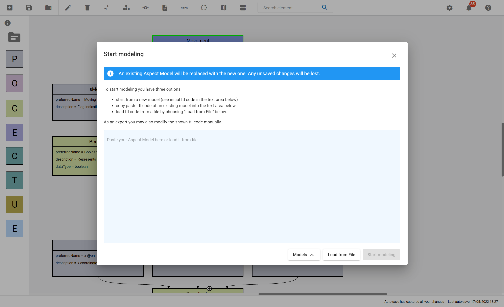

Load and save models
The Aspect Model Editor supports loading and saving Aspect Models in the official RDF/Turtle format (TTL).
| In case the loaded Aspect Model has a lower BAMM version than the one that the Aspect Model Editor is currently based on, migration will start automatically. |
Currently, the Aspect Model Editor is based on BAMM Aspect Meta Model 1.0.0.
Load or start a new model
To start modeling, proceed as follows:
| Already opened Aspect Models will be lost when loading a new one. Always make sure to save the previous Aspect Model first. |
-
Click the New/Load icon in the toolbar.
-
Click Create/Upload Aspect Model.
-
Choose one of the following options:
-
Click Models/Default Aspect Model to start from the Default Aspect Model.
-
Click Models/Movement Example to start from the Movement Example.
-
Click Load from File to open a file containing TTL code.
-
Copy and paste TTL code of an existing model into the text area.

-
-
As an expert you are able to modify the shown TTL code manually within the text area.

-
Click Start modeling.
Save models
To save a model, proceed as follows:
-
Click Save in the toolbar.
-
Choose one of the following options:
-
Click Export Aspect Model to export the model.
-
Click Export Namespace to export one of the existing namespaces.
-
Click Save to Workspace to save the current namespace to the Workspace.
-
| For saving a new version of a model without overriding the existing one, see Model versions. |